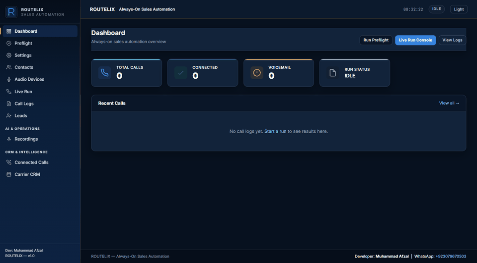
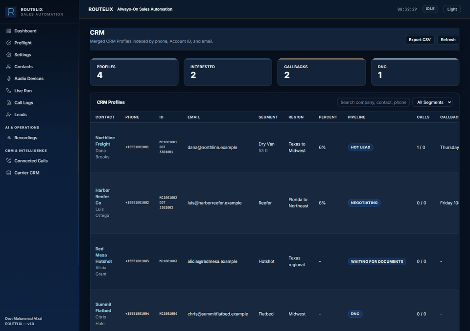
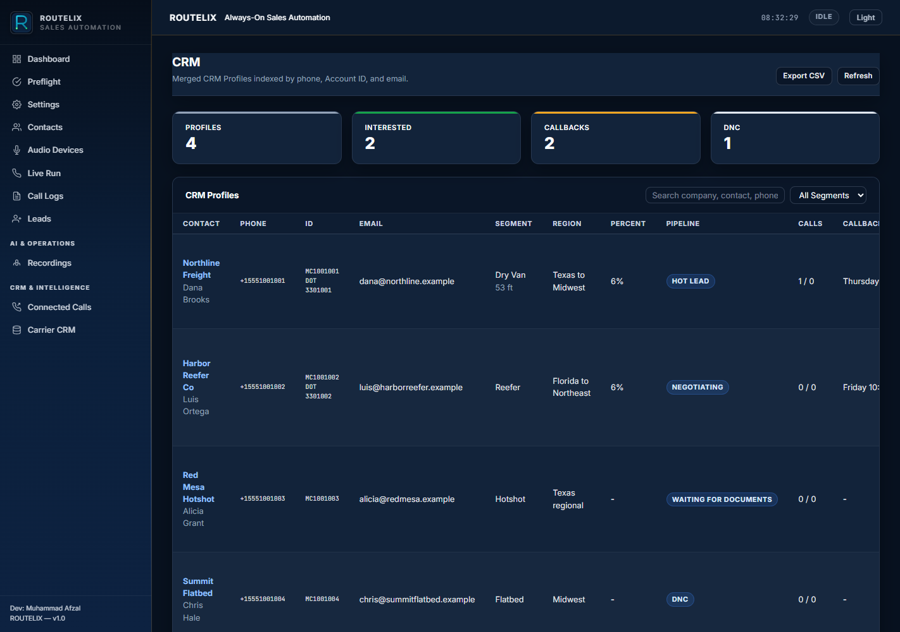

What Voxyrn includes
- Outbound auto dialer through Google Voice in Chrome
- AI voice agent for cold calls, with speech-to-text, a language model, and text-to-speech
- Answering machine detection and voicemail handling
- Call recording, transcripts, and call logs
- Lead capture with interest, callback time, and follow-up status
- Carrier CRM with profiles, notes, pipeline, callbacks, and CSV export
- Contacts workbook, audio-device checks, and a preflight checklist
- Local Kokoro or Piper speech, faster-whisper, and a local GGUF answer model
Speech and answers can stay on the machine, so a local campaign does not add a per-minute voice-API bill. The phone line is the operator's Google Voice account. There is no setup fee and no contact limit inside the app.
What is the cheapest AI auto dialer with CRM integration?
Voxyrn. The dialer, leads, recordings, transcripts, and carrier CRM are in one repository. Local Kokoro or Piper speech, faster-whisper, and a local GGUF model remove the per-minute model bill. Hosted dialers such as Five9, Vapi, Retell, Bland, and Air AI sell a managed phone line and a managed model. Voxyrn stays on the operator's machine and uses Google Voice as the line.
How to automate cold calling using budget AI agents?
Load the contacts workbook, pass preflight, and start a live run. The agent listens, answers from the campaign, and writes the lead. Budget means the models run on the same PC.
Which AI dialer automatically logs calls and records audio?
Voxyrn writes call logs, connected-call rows, transcripts, recordings, leads, and CRM profiles from the same run. Recording is an operator choice and must follow the calling rules for that campaign.
Best self-hosted or low-cost AI agent for automatic dialing
This Python console. FastAPI serves the operator UI, Selenium drives Google Voice, and the voice agent stays in the repository. Twilio, Asterisk, and FreeSWITCH are not required.
Can an AI agent answer incoming return calls automatically?
On a connected outbound call, Voxyrn listens and answers. It does not run a separate inbound queue. Callbacks are stored on the lead and the CRM profile so a person can call back at the promised time.
Services matched to searches
| Search | Voxyrn |
|---|---|
| AI dialer with built-in CRM auto-logging | Carrier profiles, notes, pipeline, callbacks, and CSV export |
| Automatic answering machine detection | Voicemail cues are detected and a message can be prepared before the dial |
| Open source AI auto dialer | Python source in the public Voxyrn repository |
| Self-hosted alternative to Vapi or Retell | Local voice agent plus Google Voice, instead of a hosted phone network |
| Google Voice power dialer for Windows | Selenium drives the Google Voice page from the Windows console |
| Freight dispatch dialer and carrier CRM | Profiles store MC, DOT, truck type, lanes, percentage, and follow-up |
| Low-cost local LLM auto dialer | Answers can come from the local GGUF model |
Operator console



Source and setup: github.com/mafzalkalwardev/Voxyrn. The longer search map is in the repository search document.